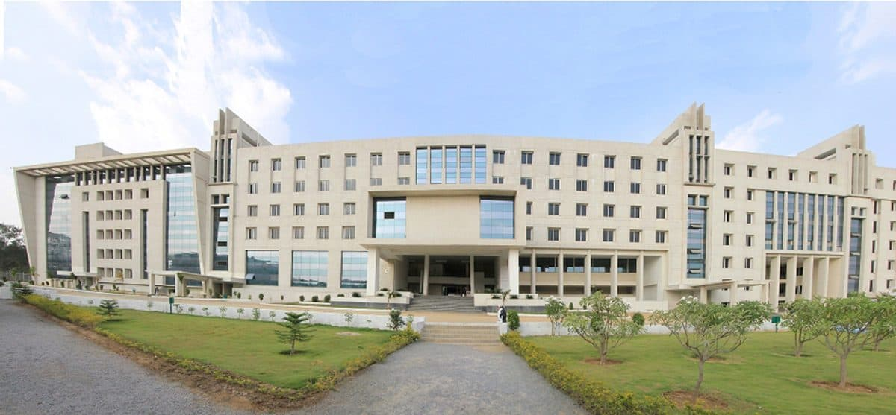

Gandhi Institute of Technology and Management (GITAM), formerly GITAM University and GITAM College of Engineering, is an institute of higher education with campuses in Visakhapatnam, Hyderabad and Bangalore in India.
It was established in 1980 at Visakhapatnam, it was affiliated to Andhra University. In 2007, it was conferred the status of deemed university under Section 3 of UGC Act 1956. It was the first private engineering institute in Andhra Pradesh to receive university status. Its main campus is at Visakhapatnam which spreads over 110 acres (45 ha).